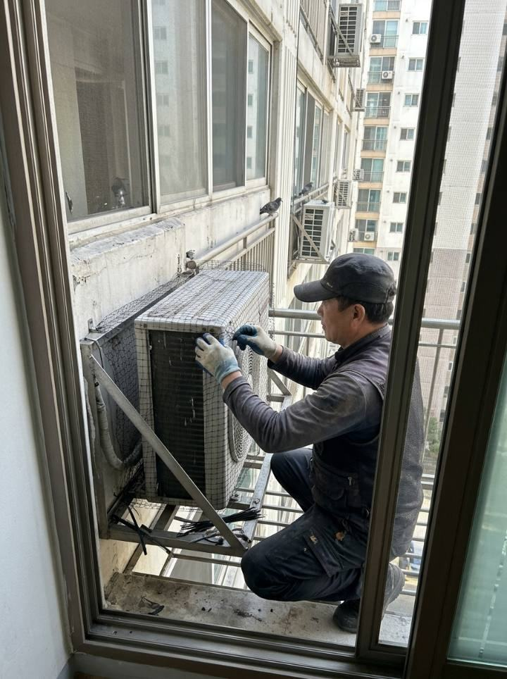

예시 사진- 3곳가까운 동네 업체
- 0원연결 수수료
- 먼저출발 전 금액 안내
부산 동구 연결 업체
어떤 상황인가요?
해당하는 걸 모두 고르면, 내용이 적힌 문자로 바로 연결돼요.
부산 동구에서는 이렇게 다릅니다
실외기 주변에 비둘기가 둥지를 틀었거나, 벌집이 생겨 위험할 때 퇴치·제거 업체를 연결합니다. 부산 동구(부산역·초량·수정동) 안에서 가까운 업체를 먼저 연결합니다.
부산 동구는 부산역과 초량동 상권, 산복도로를 따라 수정·좌천동 주택가가 이어진 원도심입니다.
언덕 위 오래된 주택이 많아 사다리차·장비 진입이 어렵고, 부산역 주변은 숙박·식당 설비 문의가 많습니다.
오래된 빌라는 처마와 벽 틈에 벌집이 잘 생기고, 옥상 물탱크 주변에 비둘기가 모입니다.
상가 간판 뒤와 처마 밑은 비둘기 둥지 자리가 되기 쉬워 버드스파이크 설치를 많이 합니다.
생활권별로 보기
부산역·초량(상권·숙박) 쪽 비둘기·벌집 출동은 영업 중인 가게는 손님 동선을 피해 작업해야 해서 출입구와 작업 공간을 미리 알려 주시면 좋습니다.
수정동(산복도로 주택) 쪽 비둘기·벌집 출동은 차가 못 들어가는 골목이면 장비를 손으로 옮겨야 해서 시간이 더 걸릴 수 있습니다.
좌천·범일(시장·주택가) 쪽 비둘기·벌집 출동은 가게 영업 전후로 작업 시간을 맞추는 경우가 많아 원하는 시간대를 먼저 말씀해 주시면 됩니다.
- 부산역·초량
- 상권·숙박
- 수정동
- 산복도로 주택
- 좌천·범일
- 시장·주택가
전화할 때 알려 주세요
- 증상과 언제부터 그랬는지, 가능하면 사진
- 골목 진입이 되는지, 차를 세울 곳이 있는지
- 상호와 영업 시간, 작업 가능한 시간대
- 방문 가능한 시간과 받을 연락처
벌집은 7~9월에 가장 크고 위험하며, 비둘기 둥지는 봄부터 가을까지 번식기 내내 늘어납니다.
이런 일이면 부르세요
- 실외기 비둘기
- 베란다 배설물
- 비둘기 둥지
- 말벌집
- 처마 벌집
- 방조망 설치
부산 동구 비둘기·벌집 비용
참고 범위예요. 업체가 출발하기 전에 전화로 예상 금액을 먼저 알려드립니다.
업체가 오기 전에
- 가까이 가지 않기
벌집 근처에서 진동이나 소리를 내면 벌이 공격할 수 있습니다.
- 위치 사진
벌집이나 둥지 위치를 멀리서 사진으로 찍어 보내 주세요.
- 창문 닫기
작업 전까지 근처 창문을 닫아 두세요.
말벌집을 직접 떼어 내려 하지 마세요. 쏘이면 위험할 수 있어 119나 전문 업체에 맡기세요.
자주 묻는 질문
벌집 제거 비용은요?
일반 벌집은 보통 5만~15만 원이고, 높은 곳 말벌집은 장비 때문에 더 듭니다.
비둘기가 계속 와요.
둥지만 치우면 다시 옵니다. 방조망이나 스파이크로 앉을 자리를 막아야 합니다.
오래된 빌라인데 수리비가 더 나오나요?
배관이나 설비가 오래되면 부품을 같이 바꿔야 하는 경우가 있어 금액이 조금 오를 수 있습니다. 업체가 출발 전에 예상 범위를 먼저 알려 드리니 듣고 결정하시면 됩니다.